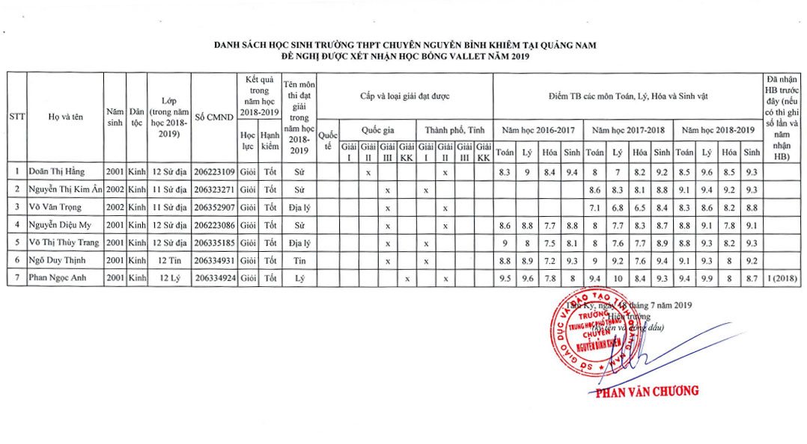

Thông báo thời gian và quy định đi nhận Học bổng Vallet năm 2019 tại Đà Nẵng

Lần cập nhật cuối lúc Thứ tư, 21 Tháng 8 2019 10:05 Viết bởi Administrator Thứ tư, 21 Tháng 8 2019 09:23
Quỹ Học bổng Vallet xin trân trọng cảm ơn Quý Trường đã hỗ trợ công tác xét chọn học sinh đề xuất trao học bổng. Quỹ Học bổng xin thông báo về buổi lễ, thủ tục và trang phục trao học bổng như sau:
1. Thời gian và địa điểm:
Khai mạc lúc 9 giờ 30 ngày 01/9/2019 (Buổi sáng, Chủ nhật), tại Trường Hermann Gmeiner, K228/5 Lê Văn Hiến, Quận Ngũ Hành Sơn, TP Đà Nẵng.
Xin lưu ý: Thời gian trao Học bổng chính thức có điều chỉnh so với Thông báo trước đây do lịch trình của Đoàn trao học bổng có điều chỉnh, mong Quý Trường thông cảm về sự điều chỉnh này.
2. Nộp danh sách ký nhận HB cho Quỹ HB khi về dự lễ trao HB:
Quý trường vui lòng lập danh sách học sinh ký nhận Học bổng (theo mẫu đính kèm), có chữ ký của Hiệu trưởng và con dấu của trường, chữ ký của các học sinh có mặt ở Đà Nẵng để nhận Học bổng và nộp lại cho Quỹ Học bổng vào ngày tổ chức lễ trao Học bổng, muộn nhất là 30 phút trước khi buổi lễ được bắt đầu (tức trước 9g00 ngày 01/9/2019). Đây là thủ tục về tài chính do Ban Điều hành Quỹ Học bổng Vallet ở Pháp yêu cầu. Tại lễ trao Học bổng, Quỹ Học bổng chỉ trao Học bổng cho những học sinh có ký tên trong danh sách có chữ ký của Hiệu trưởng và con dấu của trường.
3. Quy định về trang phục của học sinh khi về dự lễ trao Học bổng:
- Mặc đồng phục học sinh, khuyến khích mặc áo dài đối với các em nữ sinh.
- Học sinh là người dân tộc thiểu số mặc trang phục của dân tộc mình.
- Không mặc áo pull, quần jean, mang giày thể thao hoặc dép lê.
Quỹ Học bổng Vallet xin thông báo quý Thầy/Cô được biết và hỗ trợ tổ chức cho học sinh, sinh viên của Quý Trường nhận Học bổng.
Ghi chú: Thời gian học sinh tập trung tại trường để đi các em liên hệ trực tiếp cho thầy Nguyễn Xuân Tùng qua số điện thoại 0376864747 để biết cụ thể
DANH SÁCH HỌC SINH ĐƯỢC NHẬN HỌC BỔNG

- 10/10/2019 08:39 - Hứa Nhật Minh đăng quang vô địch Học trò xứ Quảng …
- 01/10/2019 09:10 - Tuyên truyền luật an toàn giao thông cho học sinh …
- 06/09/2019 15:29 - Trường THPT chuyên Nguyễn Bỉnh Khiêm khai giảng nă…
- 06/09/2019 15:23 - Tuyên truyền pháp luật cho học sinh Trường THPT ch…
- 21/08/2019 16:34 - Kế hoạch tổ chức Tuần sinh hoạt tập thể đầu năm họ…
- 09/08/2019 08:46 - Triển khai Cuộc thi ý tưởng khởi nghiệp năm 2019
- 22/05/2019 07:25 - Thông báo Thể lệ trao thưởng Quỹ ươm mầm tài năng …
- 11/03/2019 16:39 - Tuyển sinh du học Nga năm 2019 - mùa vui, mùa hi v…
- 28/01/2019 13:51 - Tổ chức cuộc thi Thực hiện ước mơ Lần 7 năm học 20…
- 23/01/2019 10:35 - Thông báo đăng ký cuộc thi Olympic Vật lý du học N…